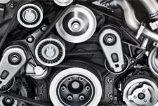
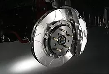
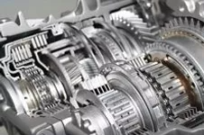
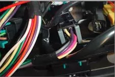

If you're looking for a local engine repair shop that you can trust, consider Shoreline Automotive. We take pride in providing comprehensive automotive maintenance and repair services for most makes and models. Our state of the art diagnostic equipment, coupled with education, experience and expertise of our technicians ensure proper care for your car.
No job is too big or too small for us. Our goal is to be the one place you call when you have a need for automotive related service. From oil changes to scheduled maintenance, brake repair, check engine light diagnostics, or those strange noises, come see us. It’s as good as done. When you are thinking of buying a used car, bring it by for an inspection and a health report. It could save you from being taken advantage of, or help you negotiate the needed repairs prior to purchase.
If you live or work in Mountain View, Palo Alto, Los Altos, Los Altos Hills, or Sunnyvale stop on by. We look forward to seeing you and want to earn the title of “My Mechanic” from you.

Is your check engine light on? It’s time for a trip to the engine repair professionals at Shoreline Auto Care in Mountain View, CA. Let our technicians get your car’s engine running like the day you bought it.

Your car's brakes are the biggest safety feature. Our technicians all received advanced certification in brake repair and will have your car's braking systems working like new.

We pride ourselves on offering our friends in Moutain View the best in transmission repair. Our auto repair shop offers everything from complex mechanical solutions to basic maintenance services

Automotive electrical systems can cause complex and frustrating issues. Our auto electrical service experts can solve any electrical problem, no matter how complex.